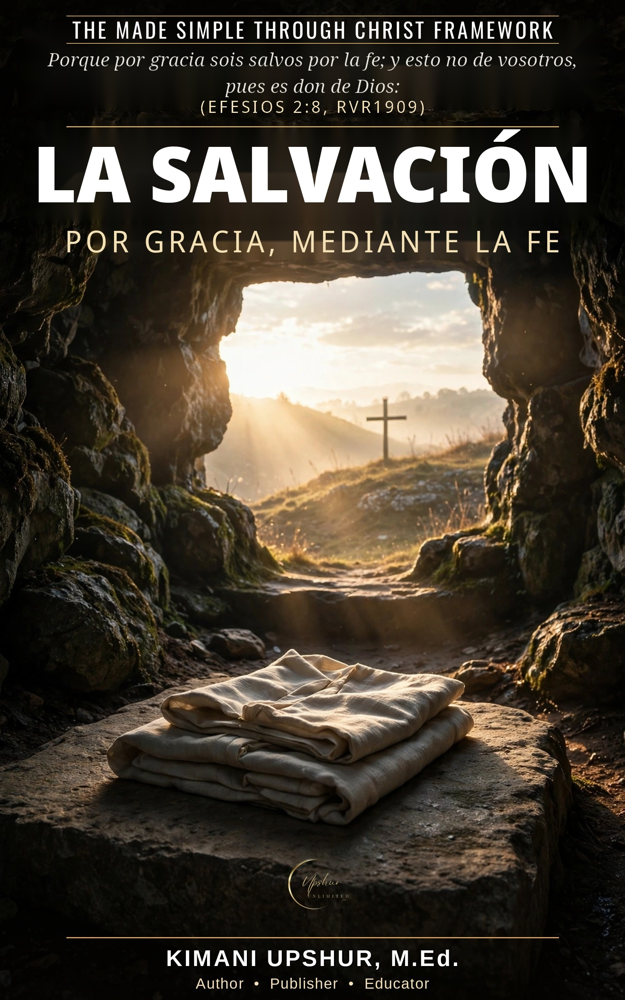

La Salvación
Por Gracia, Mediante la Fe
por Kimani Upshur, M.Ed.
¿Prefieres la edición en inglés? Salvation — read in English
Si murieras esta noche, ¿sabes dónde pasarías la eternidad? Este libro responde la pregunta más importante que jamás responderás — con la Palabra de Dios, en lenguaje sencillo.
La salvación es el rescate de Dios, dado como un don, recibido por la fe. No se gana. No se compra. No depende de ser una buena persona. Es por gracia, mediante la fe — y es para todo aquel que invocare el nombre del Señor.
En catorce capítulos claros y directos descubrirás:
- Lo que la salvación realmente es — y lo que no es
- Por qué necesitamos ser salvados: el problema del pecado
- Lo que Jesús hizo por ti en la cruz: el gran intercambio
- Cree en tu corazón y confiesa con tu boca (Romanos 10:9-10)
- Por gracia mediante la fe, no por obras
- Arrepentimiento y el nuevo nacimiento
- Cómo puedes saber que eres salvo — la seguridad de la salvación
- El bautismo y la vida salvada
- Compartir el evangelio con otros
- La vida eterna empieza ahora
Con citas de la Escritura tomadas de la Biblia Reina-Valera 1909 (RVR1909), un apéndice de catorce preguntas honestas y una oración de cierre. Incluye «Una invitación personal: Entrega tu vida a Jesucristo» y la Oración del Pecador.
Este libro es GRATIS — porque el don de Dios es gratis. Léelo y compártelo con quien lo necesite.
Temas bíblicos del libro
Disponibilidad
Descarga gratuita ahora en Payhip y Apple Books. La edición de Google Play Books está en proceso; en cuanto esté activa, aquí aparecerá su enlace verificado.
- Editorial
- Upshur Unlimited LLC
- Autor
- Kimani Upshur, M.Ed.
- Formato
- Libro electrónico
- Idioma
- Español
- Precio
- Gratis
- Capítulos
- 14
- Escritura
- Biblia Reina-Valera 1909 (RVR1909)
Más en español
El departamento de libros en español de Upshur Unlimited LLC seguirá creciendo con nuevas ediciones verificadas.